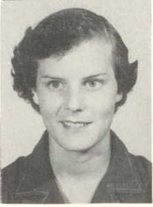

Shelby Jean Herrin
1939–1978

Life Events
Born: February 26, 1939 — Pearson, Atkinson, Georgia, United States
Died: September 12, 1978 — Stockbridge, Henry, Georgia, United States
Family
Father: William Levi Herrin
Mother: Lauretta Palmer
Military Service
No military service information has been added.
Biography
Shelby Jean Herrin was born on February 26, 1939, in Pearson, Atkinson County, Georgia.
She was a daughter of William Levi Herrin and Laura Etta Palmer. She died on September 12, 1978, in Stockbridge, Henry County, Georgia.
Photos
Family photographs will be added here.
Sources
No sources have been added yet.